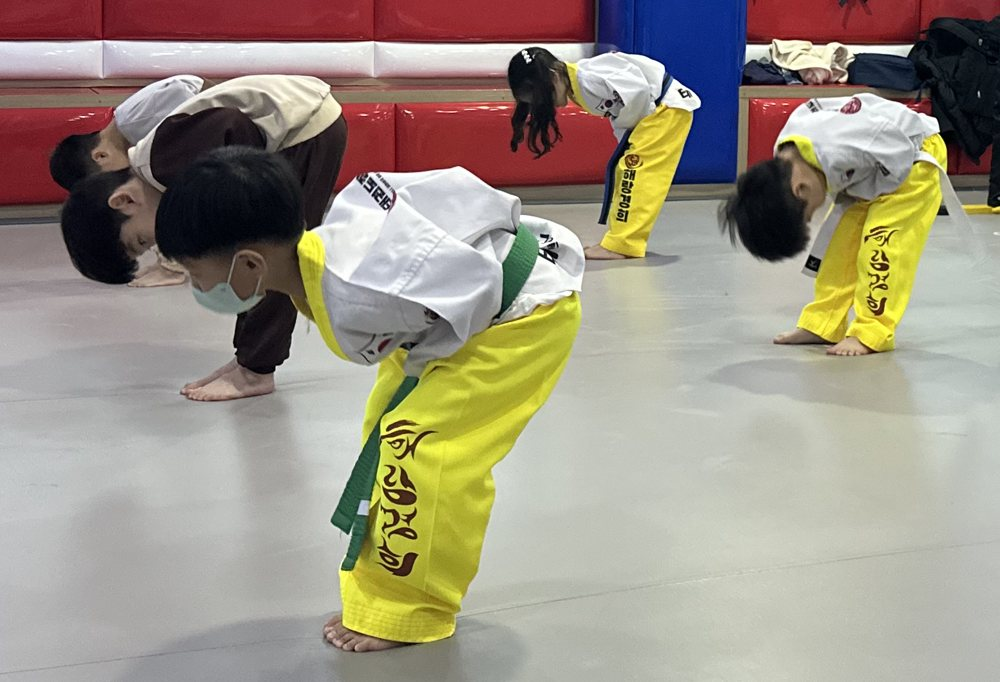

인사는
확실하게


안녕하세요 해랑경희 태권도장입니다.
오늘은 예의, 그중에서 인사를 어떤 생각으로, 어떻게 가르치는지에 대해 작성해 보려 합니다.
앞서 작성한 글들처럼 결기승전 순서로 이야기하자면
‘너무 익숙해진 나머지
내가 인사한지도 모를 정도로
자동적으로 인사함’
그러나
‘분명한 의지를 가지고
타인을 분별하여 상대에게
분명하게 인사를 함’
이런 상태를 만드는 것이 저희의 목표입니다.
10년도 더 지난 그때의 이야기를 안 할 수가 없습니다.
뙤약볕이 매우 강하던 어느 9월, 논산에 있는 육군훈련소 제30교육훈련연대에 202번 훈련병 이아빈이 입대하였습니다. 그 연대의 경례 구호가
‘충성! 사랑합니다!’
였습니다. 사랑, 눈물 이런 것들과는 꽤 거리가 있던 제가 그 곳에서 7주 동안 지내면서 고작 7주 만에 부모님과의 통화에서 뜨거운 눈물을 흘리고 사랑한다는 말을 거리낌 없이 할 수 있는 사람으로 변화되었습니다.
그 모습을 보던 같이 훈련받는 군대 친구들이 ‘대테러부대로 팔려가는 사람 맞냐’, ‘특수부대의 가슴은 뜨겁네’ 등의 푸념을 날렸지만 뭔가를 못하는 것보다야 할 수 있는 게 좋았고, 냉혈한보다는 자상한 사람이 되고 싶었기에 저는 변화되는 그런 제 모습이 만족스러웠던 것 같습니다.
이렇게 변화될 수 있었던
이유가 무엇일까요?
저는 시도 때도 없이 상관을 만나면 ‘충성! 사랑합니다!’를 외쳐대었기 때문에
‘상관한테도 하는 사랑한다는 말을
부모님한테 못한다는 것은
말이 안 된다’
라는 생각으로 이어졌고 이내 위에 서술한 모습대로 변화될 수 있었다고 생각합니다.
태권도를 지도한지 많은 시간이 흘렀고, 시간이 흐르면 흐를수록 새롭게 만나는 어린 친구들이 인사를 하는 것에 생소해하는 모습을 많이 보았습니다.
생소하면 익숙해질 때까지
연습시키면 되지~
해랑경희 태권도장의 인사 교육은
이 생각에서 시작됩니다.
- 예의→ 상대방을 존중하는 것
- 상대방에게 예의를 표할 수 있는 가장 좋은 방법이 무언인가?→ 인사
- 누구에게 인사해야 하는가?→ 아는 이웃
- 아는 이웃 중에 가장 소중한 사람은 누구인가?→ 가족 그중에서도 어머니 아버지
이렇게 수련생의 눈높이에 맞춰서 이해하기 쉽게 교육하고자 하지만 유치부 나이의 수련생은 이런 교육을 듣고만 있는 것도 마냥 힘들어할 때가 있습니다. 그래서 저희 태권도장에서는 소소하게 놀이형 교육도 진행하고 있습니다.
고수 놀이라는 게임인데 가위바위보에서 이기면 고수의 자리에 앉는 것이고 지면 뒤로 가서 다시 줄 서는데 고수에게 도전하려면
‘도전하러 왔습니다!’
하고 배꼽 인사를 해야 하는 것이 규칙입니다.
고수 놀이와 인사 연습을 신나게 했더니 부모님 앞에서도 자신감 가득한 목소리로 인사하는 모습을 자주 볼 수 있었습니다.
저희 태권도장에서 습득 속도가 다른 수련생에 비해 빠른 편인 유치부 친구들의 모습인데 너무 대견하지 않나요 ㅎㅎ
사람은 천편일률적이지 않고 저마다의 개성이 있는 만큼 새로운 지식을 받아들이고 본인의 것으로 만드는 데에 속도가 개인별로 다 다릅니다.
그렇기에 꾸준히 무엇이 중요한가에 대한 교육에 노출되는 것은
굉장히 중요하다고 생각합니다.
저희 지도진은 저희 도장을 선택해 주신 분들께서 주신 신뢰, 그 이상의 교육을 제공하고자 노력할 준비가 되어있습니다. 그래서
‘해랑경희 태권도장이라면
교육적으로 믿고
맡길 수 있어’
라는 생각이 들게 되신다면 저희의 직업적 목표는 달성한 것입니다.